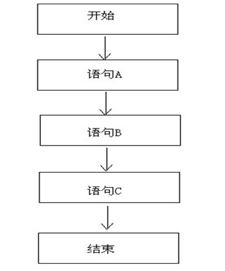
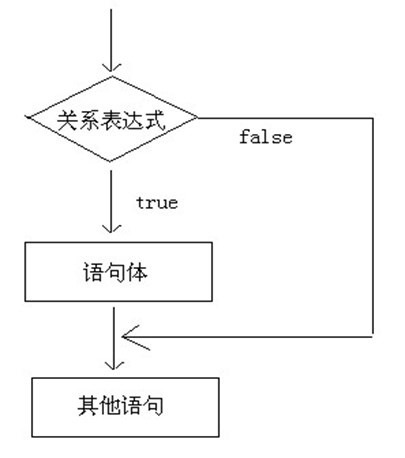
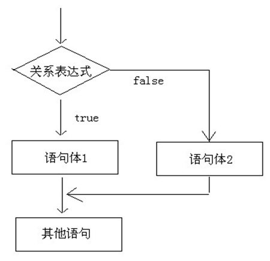
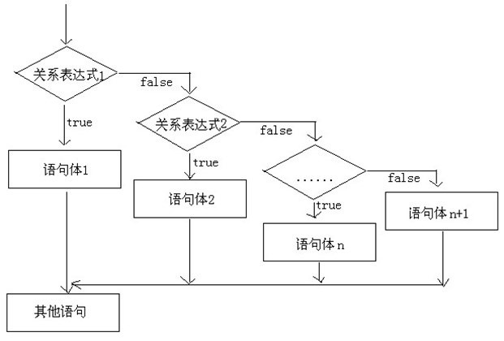
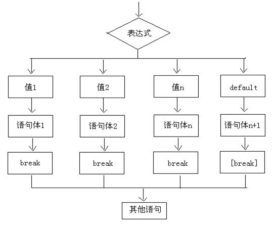

原文连接:https://www.cnblogs.com/fangfangfanga/p/12001904.html
顺序结构
程序从上到下逐行地执行，中间没有任何判断和跳转。

分支语句
1、if-else语句
if语句的三种格式
if语句第一种格式：（适合一种判断）

if(关系表达式) {
语句体;
}
首先判断关系表达式看其结果是true还是false：如果是true就执行语句体；如果是false就不执行语句体。

2、if语句第二种格式：（适合两种判断）
if(关系表达式) {
语句体1;
}else {
语句体2;
}
首先判断关系表达式看其结果是true还是false：如果是true就执行语句体1；如果是false就执行语句体2。

三元运算符，它根据比较判断后，给出的也是两个结果，所以，这种情况和if语句的第二种格式很相似，他们在某些情况下应该是可以相互转换的。
3、if语句第三种格式：（适合多种判断）
if语句第三种格式：
if(关系表达式1) {
语句体1;
}else if (关系表达式2) {
语句体2;
}
...
...
else {
语句体n+1;
}

需要注意的是，所有的语句体中，只执行一个。
三、选择结构的switch语句：
switch语句格式：
switch(表达式) {
case 值1：
语句体1;
break;
case 值2：
语句体2;
break;
...
...
default：
语句体n+1;
break;
} switch表示这是switch语句
表达式的取值：byte,short,int,char（JDK5以后可以是枚举，JDK7以后可以是String）（这句话可能出面试题）
case后面跟的是要和表达式进行比较的值
语句体部分可以是一条或多条语句
break表示中断，结束的意思，可以结束switch语句
default语句表示所有情况都不匹配的时候，就执行该处的内容，和if语句的else相似。

（1）case后面只能是常量，不能是变量，而且，多个case后面的值不能出现相同的
（2）default可以省略吗?
可以省略。一般不建议。除非判断的值是固定的（也就是说所有可能的情况都已经列在case中了）
（3）break可以省略吗?
可以省略，一般不建议。否则结果可能不是你想要的，会出现一个现象：case穿透。
（4）default的位置一定要在最后吗?
可以出现在switch语句任意位置。
（5）switch语句的结束条件：
- 情况a:遇到break就结束，而不是遇到default就结束。
- 情况b:执行到程序的末尾就结束
2、if和switch各自使用的场景：
在做判断的时候，我们有两种选择，if语句和switch语句，那么，我们到底该如何选择使用那种语句呢?
if语句使用场景：
- 针对结果是boolean类型的判断
- 针对一个范围的判断
- 针对几个常量值的判断
switch语句使用场景：
- 针对几个常量值的判断，常量的值符合byte、short、int、char这四种类型，使用switch效率会更高。